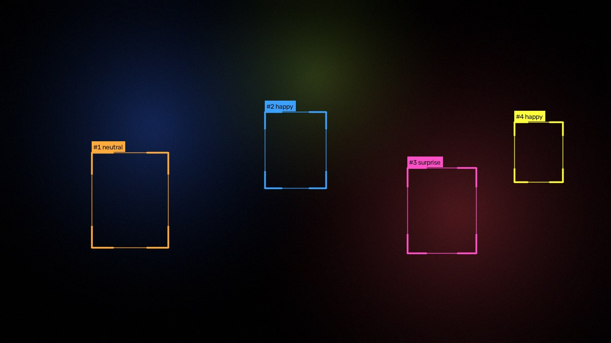
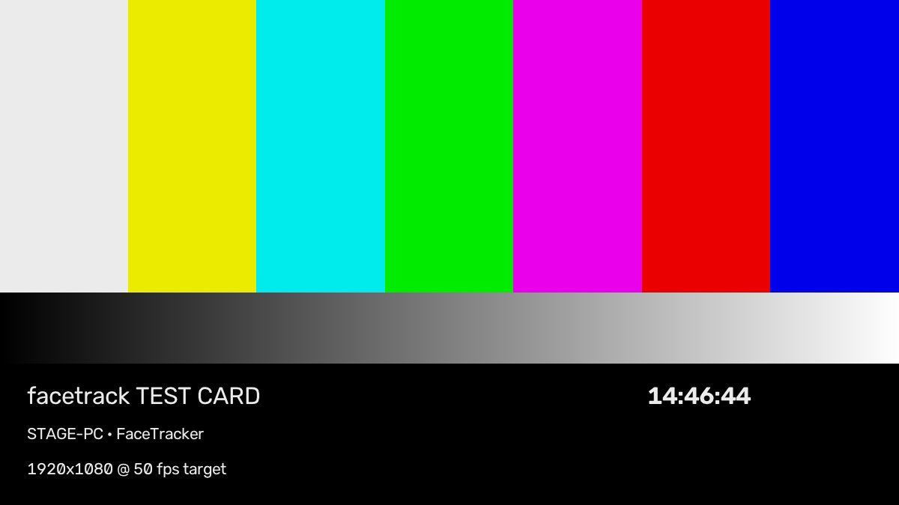

facetrack finds and follows every face in shot and sends the result straight to your vision mixer over NDI — plus Syphon and Spout for the VJ rig next to it. You drive the whole thing from a browser on your phone.

Everything is a live control. Nothing needs a restart, and it keeps running when things go wrong.
The control panel is a web page on your network. Tune it from front of house while the machine sits on stage.
Camera unplugged mid-show? Outputs cut to black, not to an error, and reconnect by themselves the moment the signal returns.
A load meter shows what each feature costs, and an optional relief valve sheds quality rather than dropping frames.
Webcams, capture cards (Blackmagic, Magewell, AJA, Elgato) and NDI feeds from elsewhere on the network.
Bars, a clock and a moving block on every feed, so you can prove the chain end to end before doors.
Crash restart, a watchdog for a wedged driver, and the machine can't sleep while it's running.
Send each one over NDI to the network, to Syphon/Spout on the same machine, or both at once.
| Feed | What it carries |
|---|---|
| Program | The picture, with tracking graphics — or kept clean if you want the graphics elsewhere. |
| Overlay | Graphics only on real transparency, ready to key in vMix, Resolume, TriCaster or OBS. |
| Faces cutout | Just the people, everything else transparent — rectangles, soft ovals, or a full silhouette. |
| Mask | The matte on its own, white on black or carried in alpha, for keying in any desk. |

Apple Silicon or Intel, macOS 11 or newer. Syphon output included. Runs comfortably on CPU.
Windows 10 or 11. Spout output included. An NVIDIA GPU is optional but unlocks the higher-accuracy detector and faster silhouettes.
facetrack detects and follows faces. It does not perform facial recognition, does not match anyone against a database, and stores no images or video — frames are processed and discarded in memory. Expression labels, if you switch them on, are a cosmetic estimate drawn on the picture and are never recorded.
No subscription. No per-show fee.
Try it free for 72 hours first — download, no card.
The full app. No account, no card, nothing disabled. When the trial ends the feeds hold on a slate until you enter a key.
VERSION macOS 11+ Windows 10+
No. Your licence key is verified on the machine itself, so it works on a show network with no route to the outside world, or a machine that has never been online. Paste the key into the control panel and that's it.
The app keeps running and the control panel stays usable, but the feeds hold on a "trial ended" slate instead of the picture. Enter a key and the video comes straight back — nothing is lost and no settings are reset.
Yes. Remove the licence in the panel on the old machine and activate on the new one. Standard keys are not locked to hardware.
No — and it can't. It finds that a face is present and follows it while it stays in shot. There is no identity model, no database and no stored imagery.
USB devices (Elgato Cam Link, Magewell USB Capture, AJA U-TAP, AVerMedia) work on both platforms. On Windows, PCIe cards including Blackmagic DeckLink, Magewell Pro Capture and AJA KONA work through their DirectShow drivers — pick the driver and exact format in the panel.
Yes. Any NDI source on the network can be the input, so facetrack can sit anywhere in an existing chain rather than needing the camera directly.
Dozens comfortably. The cost of tracking barely moves with crowd size; what costs is how hard you ask it to look for small distant faces, and the panel shows you that trade in milliseconds as you change it.